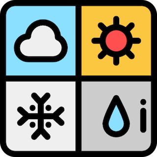

crssy
ターミナル上に天気予報を出力するCLI


概要
このソフトウェアは天気予報をブラウザで調べるよりも手軽に確認できるようにするために， コマンドライン上で天気予報を出力するものである．
使用方法
crssy [OPTION]
OPTIONS
-v, --version ソフトウェアのバージョンを出力する。
-h, --help このメッセージを出力する。
-l, --location <場所> 場所の入力をすると, その土地の天気を出力する。
-w, --week 日を入力すると, その時の天気を出力する。
インストール方法
hogehoge
プロジェクトについて
開発者
Konishi Yuki
ライセンス

アイコン

名前の由来
天気予報のソフトウェアを作るにあたって名前は何がいいかなと考えました．
よく天気予報で見る天気としては曇り・雨・晴れ・雪だな〜と思い，自分の名前の頭文字と合わせてcrssyとなりました．